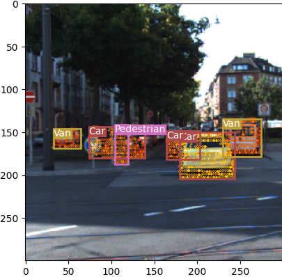
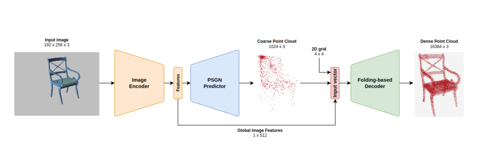
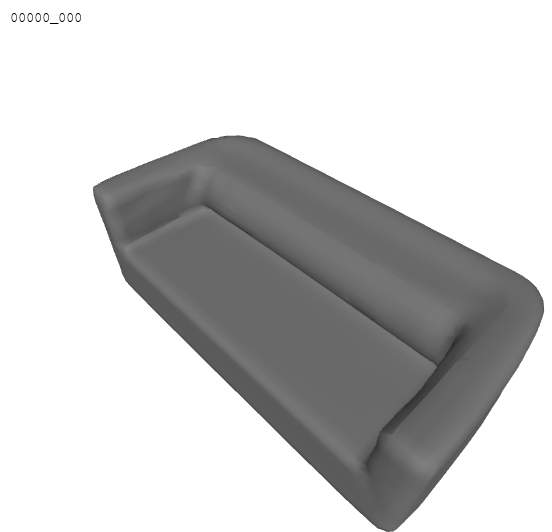
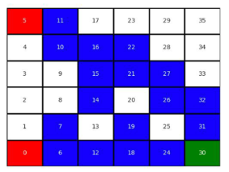
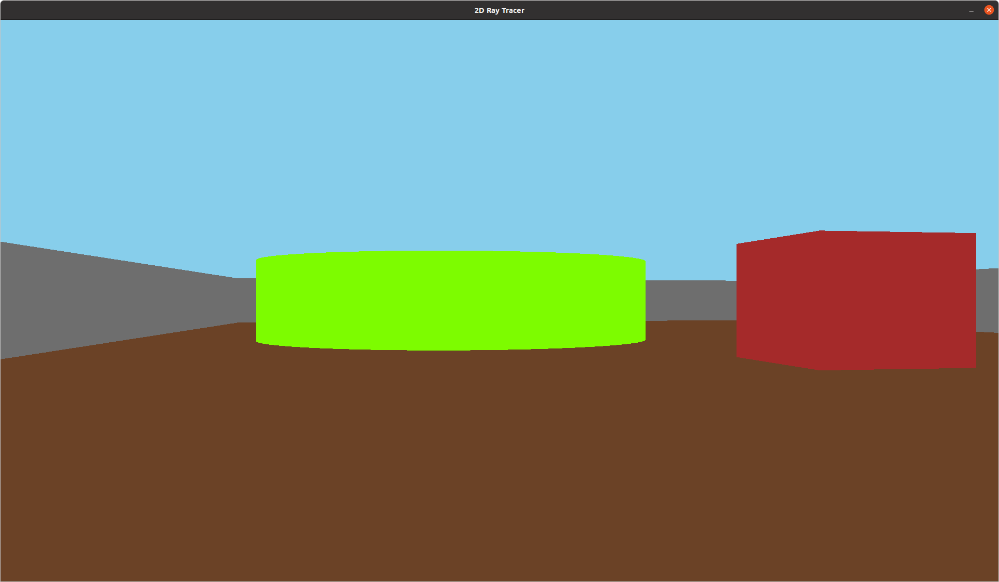
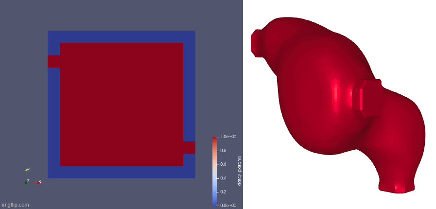
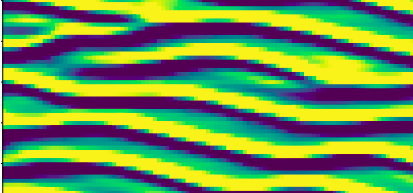
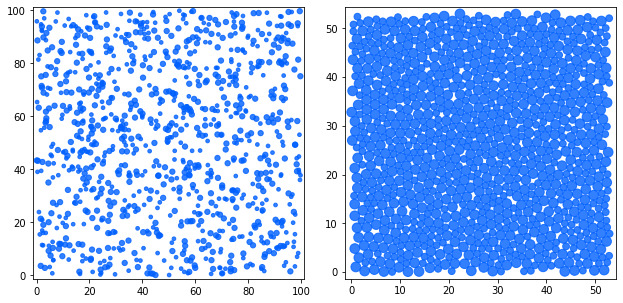
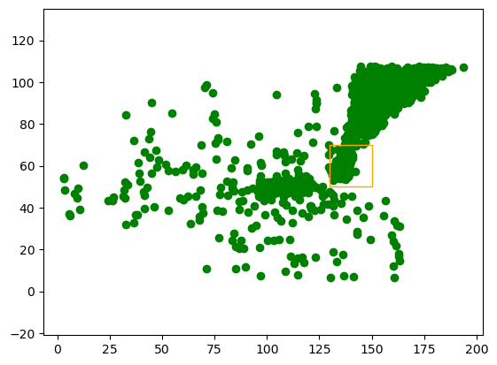

YOLOv3 and SSD on KITTI; L2-norm pruning for faster SSD inference and early LiDAR fusion.
CodeKartik Bali
PhD Candidate · Helmholtz-Zentrum Hereon & TU Hamburg
I work on vision-language models that act in 3D: choosing where to look when parts of a scene are hidden, and turning what they see into executable programs (CAD, BIM). Most of my recent work trains these models with RL against execution rewards (GRPO), and I spend a fair amount of time on making training and inference fast: multi-GPU training on H200s, vLLM, and some CUDA/Triton. I collaborate closely with DFKI.
Before my PhD, I did my M.Sc. in Computational Science & Engineering at the Technical University of Munich, with a master thesis at BMW on physics-guided generative models, supervised by Prof. Nils Thuerey. I hold a B.E. in Mechanical Engineering from BITS Pilani, Hyderabad. Outside research, I play lead guitar and sing.
I am looking for a research internship in Summer or Fall 2027. Feel free to reach out!
News
- Oct 2026Looking for a research internship in Summer or Fall 2027.
- Oct 2026FRAME accepted at npj Computational Materials!
- Oct 2026Look Where You Can (SightCAD) preprint is on arXiv.
- Sep 2026GReFEM accepted at NeurIPS 2026! Paper on arXiv, code on GitHub.
- Jul 2026MV-GEL accepted at ECCV 2026! Code and paper are online.
- Jan 2025Started my PhD at Helmholtz-Zentrum Hereon.
Research
First-author papers
Look Where You Can: Active View Selection for CAD Reconstruction under Occlusion
Preprint, 2026 UNDER REVIEW
Real objects sit inside scenes: walls, floors, and corners make much of the view sphere unreachable. A learned view selector picks feasible views for a VLM that writes executable CadQuery code, and both are trained jointly with RL against execution reward. +21 / +17 effective mIoU over strong baselines on occluded DeepCAD / Fusion360, transfers to real T-LESS and MP6D images, with ≤1.5% invalid code. Layer-wise ablations of each view's visual tokens show which views make which program parameters readable to the VLM. (Hover: ground truth vs. our reconstructions on DeepCAD, Fusion360 and T-LESS.)
MV-GEL: Language-Driven Multi-View Geometric Entity Localization on Meshes
ECCV 2026 ACCEPTED
Finding fine-grained geometric entities (edges, planar regions, curved surfaces) on 3D meshes from natural language. The model picks views based on the prompt, segments them with a VLM reasoning-segmentation backbone, and lifts the result back to the mesh with geometry-aware ray casting. Up to 1.7× face-level IoU and 4.5× edge-level F1 over CLIP-based and random-view baselines.
GReFEM: Multimodal LLMs as Zero-Shot Semantic Assistants for Physics-Guided 3D Mesh Refinement
NeurIPS 2026 ACCEPTED
Can off-the-shelf multimodal LLMs stand in for a physics solver? We ask MLLMs to point out stress-critical regions from physics-guided prompts, and connect 2D pre-training to 3D geometry with orthoViews, a trained view-selection module that picks the views where features are most visible. Without any FEM solve or simulation training data, GReFEM closes 58% of the gap between the unrefined mesh and a reference-solve oracle at a matched element budget. We also map where MLLMs succeed and where they still fall short.
Ongoing
Point2BIM: From Real Laser Scans to Executable Building Programs
ONGOING
Turning real terrestrial laser scans of buildings into executable BIM programs (exported to IFC4) with vision-language models. SFT followed by GRPO on execution-based geometric rewards, trained on 4×H200 with vLLM for rollouts. The goal is a model that works on real scans, not just synthetic scenes.
Co-authored
- J. Minder, V. Moskvoretskii, R. Singhal, D. Jiao, A. Arditi, S. Cui, Y. Borjigin, K. Bali, S. Krsteski, H. Raj, H. Nguyen, J. Brinkmann, A. Anderson, R. Aydin, R. West. Synthetic Persona Pretraining: Alignment from Token Zero. Preprint, 2026. [arXiv]
- M. K. Guru, V. Gupta, K. Bali, et al. From Finite Element Analysis to Self-Optimization: FRAME (Finite element Reasoning and AI-Agent Model Engine) and the Era of Agentic AI in Engineering. npj Computational Materials, 2026 (accepted).
- M. Tacke, …, K. Bali, et al. Constitutive Scientific Generative Agent (CSGA): Leveraging Large Language Models for Automated Constitutive Model Discovery. Machine Learning for Computational Science and Engineering, 2025.
- B. List, L.-W. Chen, K. Bali, N. Thuerey. Differentiability in Unrolled Training of Neural Physics Simulators on Transient Dynamics. Computer Methods in Applied Mechanics and Engineering (CMAME), 2025. [arXiv]
- K. Bali, K. Supradeepan. Numerical Analysis of Flow Past an Oscillating Circular Cylinder using Arbitrary Lagrangian Eulerian Consistent Flux Reconstruction Scheme. 2019. [arXiv]
Experience
- Jan 2025 – nowPhD Candidate, Helmholtz-Zentrum Hereon, Hamburg. Active view selection, VLMs that write code, RL post-training.
- Sep – Dec 2024AI Engineer, Project-S and Beyond Technologies, Munich. ML for radar perception and signal processing.
- Sep 2023 – May 2024Master Thesis, BMW AG, Munich. Physics-guided diffusion models and GANs that made 2D/3D flow-geometry design 2× faster (grade 1.0).
- May 2022 – Aug 2023ML Working Student, TUM Thuerey group. GNNs and ResNets for chaotic PDEs; CI/CD for PhiFlow.
- EarlierSoftware Engineer, L&T Construction. Automated data pipelines.
Earlier Projects

Object Detection with LiDAR Fusion

Dense Point Clouds from a Single RGB Image
Two-stage point set generation with an encoder-predictor and folding decoder (ML for 3D Geometry, Prof. Angela Dai).
Report
3D Shape Completion with DeepSDF & 3D-EPN
Continuous SDF shape representations on ShapeNet: completion and latent interpolation.
Code
Topology Optimization with RL in JAX-FEM
Double-Q agent with JAX-FEM as the environment (TUM Data Innovation Lab).
Report
Interactive 3D Ray Tracer
First-person ray-tracing app in C++ with SDL2.
Code
Generative Geometry Design for CFD
Master thesis (TUM × BMW): physics-guided generative models synthesize low-pressure-drop flow manifolds, with fluid topology optimization in PhiFlow.
Slides
GNNs for the Kuramoto–Sivashinsky Equation
Message-passing GNNs and CNNs with temporal unrolling for chaotic PDEs; led to the CMAME 2025 paper.
Paper
Sphere Packing via Differentiable Physics
Gradient-based minimization of overlap energy to find optimal 2D packings in PhiFlow.
Code
Pedestrian Distributions with VAEs
Learning crowd distributions in the TUM MI building for evacuation scenarios.
Code